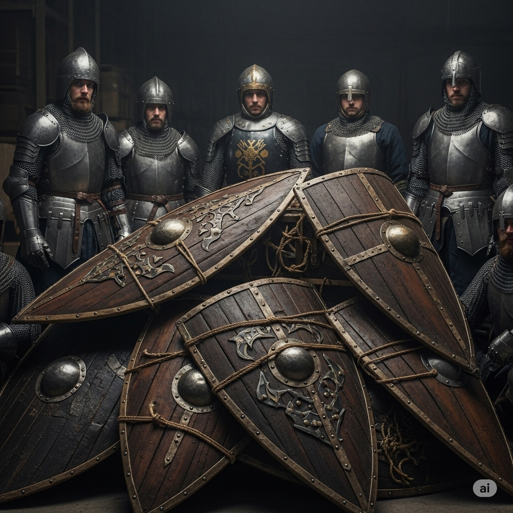

Um carregamento de escudos contrabandeados foi recuperado pelas autoridades do reino, reforçando a segurança das fronteiras...
Moradores da vila de Norrum avistaram escudos sendo transportados por um grupo suspeito durante a madrugada, próximo à floresta de Eldar.
Os escudos, de fabricação refinada e com brasões de reinos vizinhos, foram encontrados escondidos em uma caverna. Acredita-se que os contrabandistas planejavam vendê-los no mercado.
As autoridades locais estão investigando a origem dos escudos e buscando pistas sobre.
